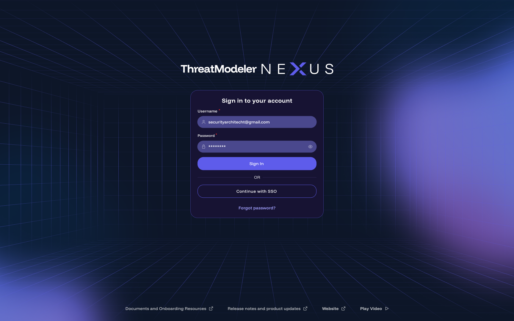
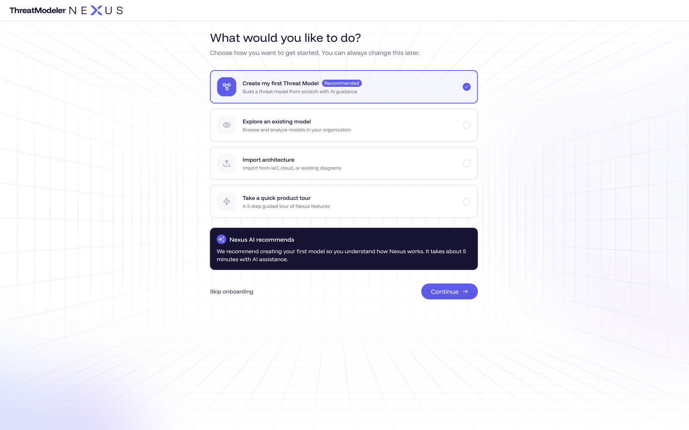

DECISION 01
Onboarding solves the first problem — it doesn't teach the software
Problem
Traditional enterprise onboarding walks through menus, navigation, documentation and configuration. For a discipline this dense, that's a curriculum standing between the user and any value.
Options weighed
- Guided product tour — familiar, but front-loads the entire platform.
- Documentation-first — thorough, and ignored under deadline.
- AI-guided onboarding built around “let's build your first threat model.”
Choice & why
Merge onboarding with first success. The conversation changes from “here's how ThreatModeler works” to “let's build your first threat model” — because first success is the fastest teacher.
Trade-off I accepted
Advanced configuration is delayed, not surfaced up front — handled with progressive disclosure so experts can still reach it directly.

